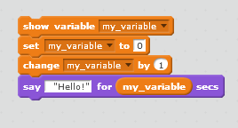

Core 4
Function: Specific repeatable and customizable action with parameters and definitions.
Parameters: Variabbles that are generalized in the function definition, and give input when the function is called.
Definition: Defines the parameters and actions the function will perform.
Variable: A container that stores a value or data.
- Scratch: 
- Python:
my_variable = 0
print(my_variable)
- C++:
int my_variable = 0;
Conditional: Statements which perform different computations or actions depending on whether a boolean condition evaluates to true or false.